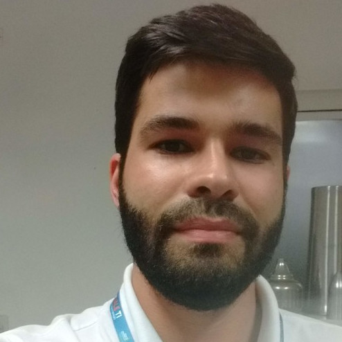

Automation engineer who builds software for the plant floor.
Process automation, monitoring systems, machine retrofit and system integration. Now I also build web tools with AI-assisted development, so ideas reach a working screen in days.
- Role
- Director, Richa Automation
- Training
- B.Eng. Electrical, Electronic Systems (UERJ)
- Standards
- NR12 (machine safety), NR35 (work at height)
- Languages
- Portuguese, English, Spanish, German (elementary)
- Based in
- São José dos Campos, Brazil
What I can build for you
Web portals with login and database
Per-client accounts, records, status tracking. Example: a maintenance portal with machines and work orders, running in production on my own site. View the portal
Dashboards and monitoring
Equipment status, alerts and reports, from my years of remote monitoring and analytics in telecom infrastructure.
Calculators and internal tools
Small apps that replace spreadsheets. Try the downtime cost calculator and the maintenance planner.
Automation and machine software
CNC control software and process automation for metal spinning, plus retrofit, integration and NR compliance.
Experience
Richa Automation, Director
Jan 2025 to presentOwn company, São José dos Campos.
TIM Brasil, Senior Consultant
Aug 2019 to Mar 2024Telecom site infrastructure for data centers, long-distance sites and metro networks. Remote equipment monitoring, process automation and analytics.
Mec Arm, Automation Engineer
Jun 2017 to Jul 2019Automation projects for metal spinning processes. Developed CNC control software.
Glück and everis, Telecommunications Analyst
Mar 2015 to Jun 2017Sized solutions and designed projects for corporate clients of TIM Brasil, using databases and working with several teams.
TIM Brasil, Engineering Intern
Aug 2011 to Aug 2013Technical feasibility studies: costs, deadlines and priorities. Last project integrated tools and databases and set training standards for new teams.
Education and certifications
UERJ, Bachelor of Engineering
2007 to 2014Electrical Engineering, Electronic Systems emphasis.
Web development
JavaScript, React and CSS courses. Award: Estágio Sem Fronteiras contest.
Let's talk about your project
Tell me what you do by hand today and what you wish you could see. I reply with a scope and a price.